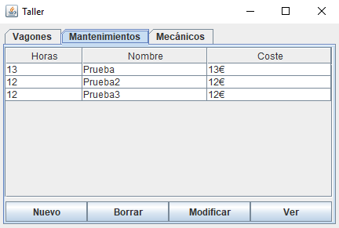

Esta ventana es la que veremos al entrar en la aplicación.
En la parte de arriba podremos ver 3 pestañas las cuales nos mostrarán una tabla de "Vagones", "Mantenimientos"
y "Mecánicos".
En el centro de la ventana veremos la tabla de datos según la etiqueta antes comentada. Para dar un ejemplo,
en la imagen de abajo hemos dejado pulsada la etiqueta de "Mantenimientos". En esta etiqueta podremos ver una tabla
la cual nos mostrará tanto el nombre del mantenimiento como su coste y las horas que ha durado.
Por último, en la parte inferior de la ventana podremos ver 4 botones, "Nuevo", "Borrar", "Modificar" y "Ver".
Cada botón tiene su funcionalidad pero en este apartado hablaremos del botón "Borrar" ya que se hace directamente
desde la ventana principal.
Para poder borrar un dato deberemos pulsar sobre él y pulsar en dicho botón, tras eso saldrá una pantalla de
aviso y deberemos aceptarlo. Tras eso se borrará dicho campo seleccionado.
